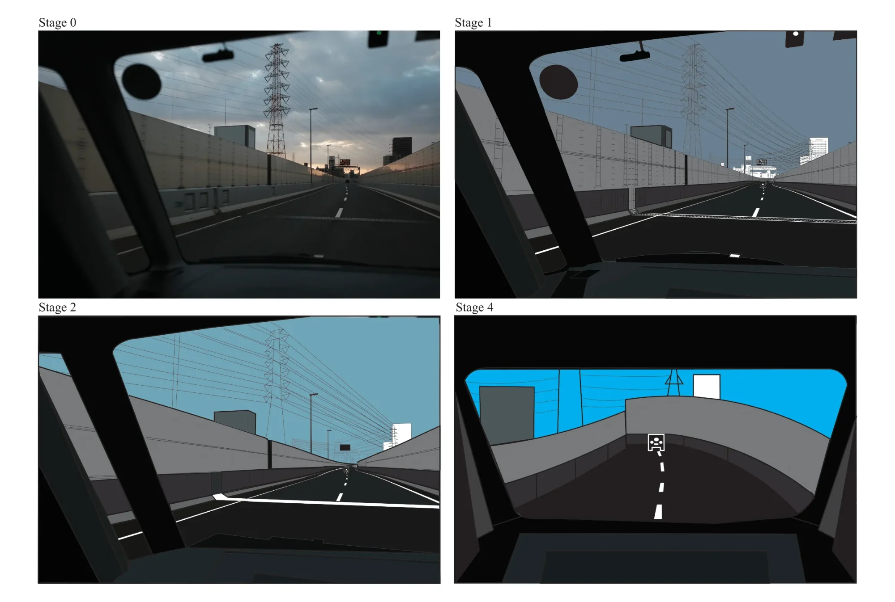
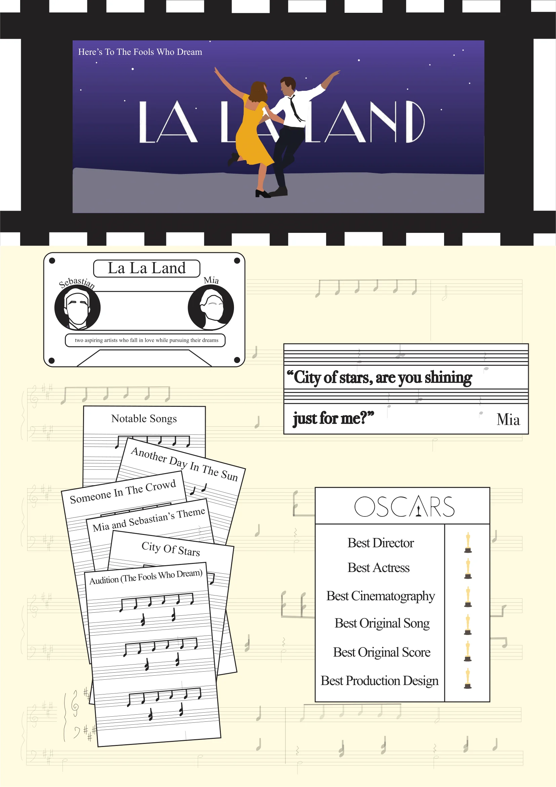

Graphic Design · NUS
Miscellaneous Works
Two coursework pieces — an infographic breaking down La La Land through the language of the film itself, and an exercise in abstraction.
- Role
- Designer
- Timeline
- 2023
- Team
- Solo
- Tools
- Adobe Illustrator, InDesign
Context
Two smaller assignments: an abstraction piece and an infographic.
Abstraction

The source is a photograph taken through a windscreen on an expressway at dusk. Each stage takes a layer out. Stage 1 redraws the whole scene as flat colour — the pylon, the cables, the barrier panels and the skyline are all still there, but the photographic light is gone. Stage 2 thins that detail: the panel lines drop off the barrier walls, the buildings flatten into plain blocks, and the overcast sky becomes a single bright blue. By Stage 4 only the structure is left — the windscreen frame, the curve of the barrier, the road, one dashed lane line, and a single glyph each for the pylon and the car ahead.
Infographic

The top half
The top of the infographic has one job: catch the eye immediately. The vibrant colours of the scene were chosen to make La La Land instantly recognisable, with the iconic scene as the central visual so the viewer is engaged at first glance. If the scene doesn’t land, the title in its distinctive font and the tagline reinforce the connection.
The scene is framed inside a film strip, which adds cinematic flair and makes the whole composition more dynamic.
The bottom half
The bottom had to balance the visual weight of the top while staying informative without overwhelming. The background is a music sheet — Mia and Sebastian’s Theme — dropped to low opacity so the text stays legible and the musical connection survives.
The background sits at #FFFADE, chosen to read as an ageing music sheet, which quietly ties into the nostalgia running through the film.
The details that carry it
- Cassette graphic — introduces Mia and Sebastian and carries a one-line hook about the premise, in a format that reads as music
- Iconic quote — placed below the score lines, where lyrics would sit on a sheet of music
- Track list — layered to look like stacked music sheets, reinforcing that the soundtrack is part of the film’s identity